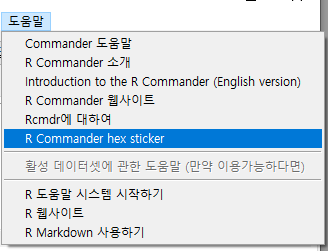

Tools
Help
datasets
carData > Prestige
carData > Moore
carData > OBrienKaiser
carData > OBrienKaiserLong
datasets > airquality
carData > Bfox
datasets > sleep
carData > DavisThin
datasets > USArrests
MASS > birthwt
carData > Friendly
carData > Cowles
carData > Adler
datasets > warpbreaks
Rcmdr

선택하면 아래와 같은 이미지 파일이 등장한다: